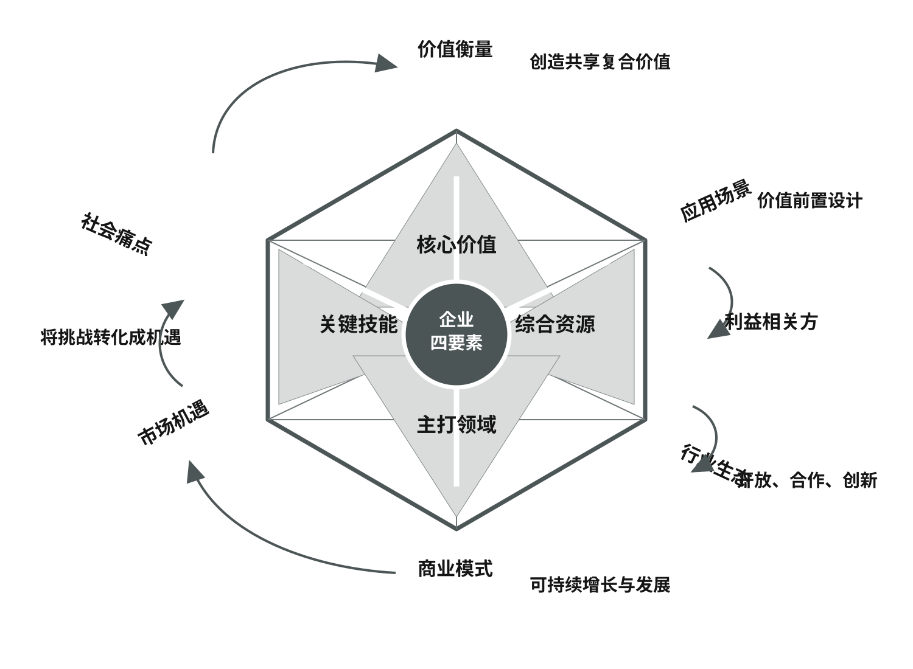

六维宝石图谱
把社会环境问题转译为经过场景和价值验证的商业战略。
这一方法要处理什么
把社会环境问题转译为经过场景和价值验证的商业战略。
“为使得企业的公司治理、战略决策、运营管理、增长与发展以及与多重利益相关方沟通的系统性工作能够得到整体性、系统性、动态性的全局考量和具体甄别， 我建议使用下图中的六维宝石图谱，这也是在长期的实践中探索、实验、提炼和完善出来的一个实用方法。它在帮助很多企业转型提升的过程中，得到了富有成效的验证。这六个维度是：社会痛点、市场机遇、行业生态、应用场景、价值衡量以及商业模式，如图2-2所示。”《可持续商业战略与实践》，第 40 页
社会痛点、市场机遇、行业生态、应用场景、价值衡量和商业模式必须联动判断。《可持续商业战略与实践》，第 40 页
原书对方法的说明
“为使得企业的公司治理、战略决策、运营管理、增长与发展以及与多重利益相关方沟通的系统性工作能够得到整体性、系统性、动态性的全局考量和具体甄别， 我建议使用下图中的六维宝石图谱，这也是在长期的实践中探索、实验、提炼和完善出来的一个实用方法。它在帮助很多企业转型提升的过程中，得到了富有成效的验证。这六个维度是：社会痛点、市场机遇、行业生态、应用场景、价值衡量以及商业模式，如图2-2所示。”《可持续商业战略与实践》，第 40 页
“· 市场机遇：社会痛点不直接等于市场机遇。通过对痛点的聚焦，将应对挑战转化为市场机遇是这一步要做的工作。需要进行进一步的动态需求分析、 规模分析、量化分析、限制因素分析等工作，将“痛点”翻译成“需求 ”。 在分析需求时，将经济、环境、社会多重角度考虑进来，如涉及政策驱动、 合规要求、利益相关方诉求等。”《可持续商业战略与实践》，第 40 页
“· 行业生态；审视行业现状，对现行方法进行存量评估，对新型方案进行增量可行性分析，对填补行业短板的创新技术或模式进行技术经济分析、现实性检验分析。在行业生态中，撬动可整合的资源，进行社会化创新，在填补空白之后，进一步将增量方案升级到行业规范和标准。”《可持续商业战略与实践》，第 41 页
“· 应用场景：这是在开发可持续商业的新型解决方案(包括产品、技术、创新、模式、生态的多种选择)之前最有价值的工作之一。采用情景规划的方法可以帮助我们对新概念进行接近实际场景的推演，从而避免局限于只聚焦产品或技术本身， 而忽略新方案在使用中可能出现的问题和价值实现的过程，这些问题和过程往往会引入多重利益相关方(终端消费者、客户或上下游供应链、生态合作伙伴、政策和监管部门、社区和环境等)的参与和互动，这一参与行为对问题解决和价值最终实现有直接作用，也影响新方案的完善和调整，甚至可以决定新方案在实际应用中的成败。场景规划还有助于在引入可持续循环设计时，探索从源头到闭环的多种可能性、 多条路径和多维价值。”《可持续商业战略与实践》，第 41 页
“为使得企业的公司治理、战略决策、运营管理、增长与发展以及与多重利益相关方沟通的系统性工作能够得到整体性、系统性、动态性的全局考量和具体甄别， 我建议使用下图中的六维宝石图谱，这也是在长期的实践中探索、实验、提炼和完善出来的一个实用方法。它在帮助很多企业转型提升的过程中，得到了富有成效的验证。…”《可持续商业战略与实践》，第 40 页
构成维度
- 社会痛点
· 社会痛点：扫描那些对社会和环境产生负面足迹的亟待解决的问题，比如高污染、高耗能、碳足迹、供应链、产业转型中的内部外部障碍、安全隐患、社会不平等，这些利益相关方诉求强烈的现象。
书中原文 · 第 40 页 - 市场机遇
· 市场机遇：社会痛点不直接等于市场机遇。通过对痛点的聚焦，将应对挑战转化为市场机遇是这一步要做的工作。需要进行进一步的动态需求分析、 规模分析、量化分析、限制因素分析等工作，将“痛点”翻译成“需求 ”。 在分析需求时，将经济、环境、社会多重角度考虑进来，如涉及政策驱动、 合规要求、利益相关方诉求等。
书中原文 · 第 40 页 - 行业生态
· 行业生态；审视行业现状，对现行方法进行存量评估，对新型方案进行增量可行性分析，对填补行业短板的创新技术或模式进行技术经济分析、现实性检验分析。在行业生态中，撬动可整合的资源，进行社会化创新，在填补空白之后，进一步将增量方案升级到行业规范和标准。
书中原文 · 第 41 页 - 应用场景
· 应用场景：这是在开发可持续商业的新型解决方案(包括产品、技术、创新、模式、生态的多种选择)之前最有价值的工作之一。采用情景规划的方法可以帮助我们对新概念进行接近实际场景的推演，从而避免局限于只聚焦产品或技术本身， 而忽略新方案在使用中可能出现的问题和价值实现的过程，这些问题和过程往往会引入多重利益相关方(终端消费者、客户或上下游供应链、生态合作伙伴、政策和监管部门、社区和环境等)的参与和互动，这一参与行为对问题解决和价值最终实现有直接作用，也影响新方案的完善和调整，甚至可以决定新方案在实际应用中的成败。场景规划还有助于在引入可持续循环设计时，探索从源头到闭环的多种可能性、 多条路径和多维价值。
书中原文 · 第 41 页 - 价值衡量
· 价值衡量：在这个维度上，用社会效益、环境效益、经济效益三重考量构建起综合的评估体系，细化到财务和非财务、市场和非市场、增长和发展、技术和创新、组织能力、生态建设等多元矩阵的各个矢量当中。例如在双碳解决方案中，细化到碳因子、碳足迹、碳范畴、碳资产等多个方面。
书中原文 · 第 41 页 - 商业模式
检验解决方案能否形成持续经营：谁获得什么价值，企业依靠什么资源、伙伴与收入机制交付方案，以及如何让经济影响和社会环境影响同时提高。商业模式是六维转译的落点，而不是在社会痛点上附加一个盈利口号。
书中原文 · 第 41 页
“· 市场机遇：社会痛点不直接等于市场机遇。通过对痛点的聚焦，将应对挑战转化为市场机遇是这一步要做的工作。需要进行进一步的动态需求分析、 规模分析、量化分析、限制因素分析等工作，将“痛点”翻译成“需求 ”。 在分析需求时，将经济、环境、社会多重角度考虑进来，如涉及政策驱动、 合规要求、利益相关方诉求等。…”《可持续商业战略与实践》，第 40 页
实施阶段
“· 行业生态；审视行业现状，对现行方法进行存量评估，对新型方案进行增量可行性分析，对填补行业短板的创新技术或模式进行技术经济分析、现实性检验分析。在行业生态中，撬动可整合的资源，进行社会化创新，在填补空白之后，进一步将增量方案升级到行业规范和标准。”《可持续商业战略与实践》，第 41 页
输入
“· 价值衡量：在这个维度上，用社会效益、环境效益、经济效益三重考量构建起综合的评估体系，细化到财务和非财务、市场和非市场、增长和发展、技术和创新、组织能力、生态建设等多元矩阵的各个矢量当中。例如在双碳解决方案中，细化到碳因子、碳足迹、碳范畴、碳资产等多个方面。”《可持续商业战略与实践》，第 41 页
使用过程
“相关方诉求和锁定与企业四要素相匹配实质议题的同时，能够从市场需求或从创造客户出发，提供好的产品和服务，这也是商业与公益的共同点。 好的可持续商业方案应当是创新、共益、可以市场化。从商业模式的价值创造绩效来看，传统商业聚焦于经济影响力，力图实现市场逻辑导向下的经济价值最大化，…”《可持续商业战略与实践》，第 41 页
输出
“我们从以上六个维度分析和判断企业在可持续商业战略思维过程中，是否与社会进步和环境和谐同向、同频、同步；是否抓住了切合社会环境需求的真正问题， 是否找到了将企业四要素对接并应用在解决这一问题的方向和途径上；是否可以通过精准并有实效的解决方案和实施达到让企业宗旨“变现”,即在创造企业价值的同时，…”《可持续商业战略与实践》，第 42 页
原书中的应用说明
“我们从以上六个维度分析和判断企业在可持续商业战略思维过程中，是否与社会进步和环境和谐同向、同频、同步；是否抓住了切合社会环境需求的真正问题， 是否找到了将企业四要素对接并应用在解决这一问题的方向和途径上；是否可以通过精准并有实效的解决方案和实施达到让企业宗旨“变现”,即在创造企业价值的同时，创造社会价值；在解决社会环境问题的同时，提升企业的可持续性竞争力； 在推动企业增长和发展的同时，引领行业和社会可持续发展。 六维宝石图谱在帮助一家中型民营企业战略转型过程中得到了有效的实际应用。受市场格局变化的冲击，以及绿色能源低碳发展态势的影响，这家热能交换设备制造民营企业正处在重大转型升级的当口。 年轻的企业领导人、二代接班人带领他的团队，重新审视企业增长与发展的战略选择。基于可持续商业战略思维方式， 企业管理层认真学习了可持续商业的底层逻辑，开始对以往的只重产品、销售、利润的思维方式，深究企业的宗旨和与社会发展相同步、相结合的新的经营策略，把企业的发展方向定位在用绿色能源造福社会的方向上。”《可持续商业战略与实践》，第 42 页
“这个新型的六维宝石图谱在帮助中集集团优化双碳组合项目设计中也发挥了实效作用。中集集团公司(含上市公司)是一家为全球市场服务的多元化跨国产业集团，在物流装备供应领域处于世界领先地位，提供高品质与可信赖的设备和服务。 集团高度重视ESG 和双碳策略，将可持续发展作为企业的经营方针。为使得可持续商业得以落地、生根、开花、结果，集团还专门设立了可持续发展委员会，统领可持续商业战略和ESG 实施工作。集团领导特别强调，ESG 和双碳等可持续商业策略要专注于那些“社会有痛点，市场有需求、行业有短板”的重大议题，精准地抓住机遇，主动地应对挑战，在实现更高水平的ESG 表现、双碳解决方案的同时，提升企业的竞争力和可持续发展能力建设。集团下属的多个业务板块提出了有关ESG、双碳的战略拓展项目，涉及运输、建筑、绿色能源、数字智能等多个应用领域。 六维宝石图谱方法帮助发现了之前未曾考虑到的利益相关方互动场景、价值创造的亮点、商业模式的疏通，并且还让管理层在深刻理解和运用可持续商业战略思维方面获得了重要提升，为未来推进集团和各个业务板块的可持续商业战略与实践打下了科学和系统的基础。中集集团可持续发展委员会秘书处以这个六维度宝石模型为框架，以中集载具“IBC 循环桶”业务和“西江水泥”项目为切入口，进一步细化诠释了两个案例业务的“六维度”可持续发展经营模式。通过两个案例的初步分析与讨论，大家一致认为对于商业项目的可持续发展竞争力的系统分析与提升有非常大的帮助。集团高度认可这一可持续商业战略思维方法的实”《可持续商业战略与实践》，第 42 页
“我们从以上六个维度分析和判断企业在可持续商业战略思维过程中，是否与社会进步和环境和谐同向、同频、同步；是否抓住了切合社会环境需求的真正问题， 是否找到了将企业四要素对接并应用在解决这一问题的方向和途径上；是否可以通过精准并有实效的解决方案和实施达到让企业宗旨“变现”,即在创造企业价值的同时，…”《可持续商业战略与实践》，第 42 页
相关图示

来源与页码
社会痛点、市场机遇、行业生态、应用场景、价值衡量和商业模式必须联动判断。